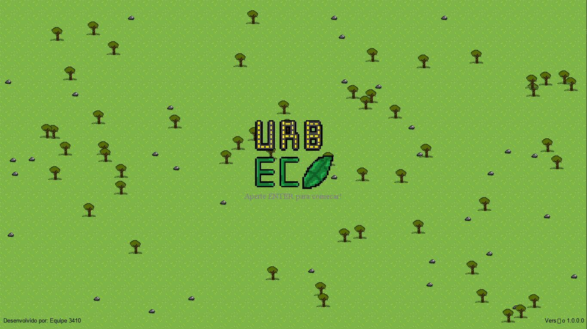

Planeje o território
Organize bairros, serviços e mobilidade para uma cidade que funciona de verdade.
Simulação urbana • acesso antecipado
No Urb.Eco, cada escolha tem consequências. Planeje seus recursos, equilibre a economia, desenvolva sua insfraestrutura e enfrente os desfios que surgem pelo caminhho. O futuro da cidade está nas suas mãos

01 / O desafio
Planeje o crescimento sem perder de vista as pessoas e o planeta.
Organize bairros, serviços e mobilidade para uma cidade que funciona de verdade.
Administre o orçamento da cidade, mantenha as contas sob controle e tome decisões estratégicas para evitar crises e prevenir desastres. .
Escolha soluções sustentáveis e veja o impacto de cada decisão no ecossistema.
“O crescimento urbano pode trazer benefícios, mas só o planejamento transforma desenvolvimento em futuro.”